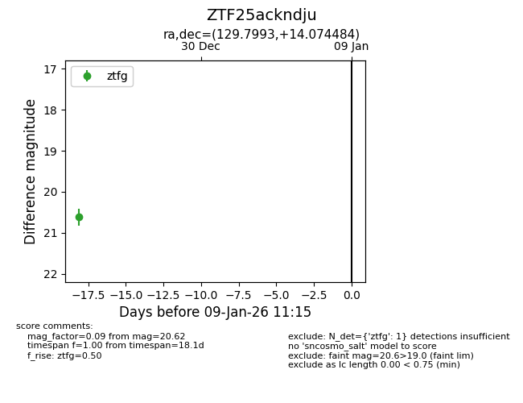
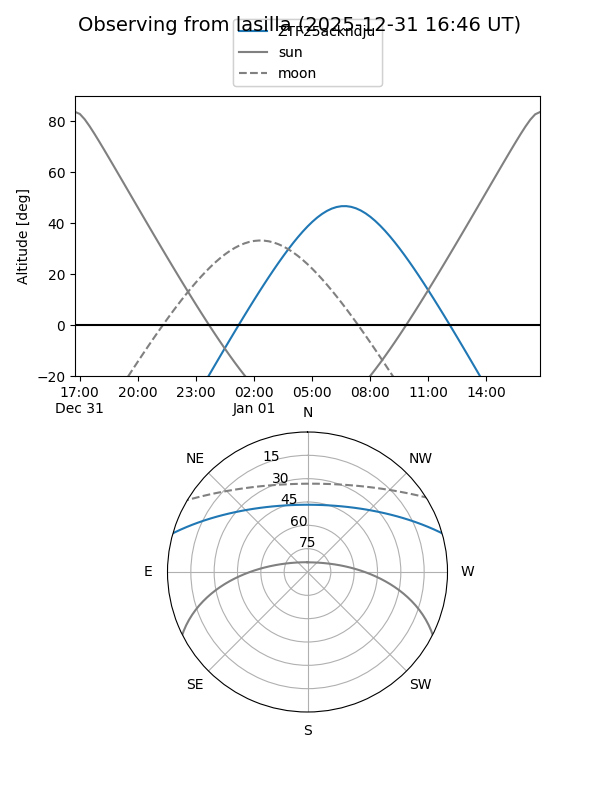

ZTF25ackndju
Target ZTF25ackndju at 2026-01-09 12:49
Aliases and brokers:
FINK: link
Lasair: link
ALeRCE: link
alt names
ZTF25ackndju (ztf,fink_ztf)
Coordinates:
equatorial (ra, dec) = 129.7993,+14.07448
equatorial (HMS+DMS) = 08:39:11.84,+14:04:28.14
galactic (l, b) = (211.8689,+30.13219)
Flags:
Photometry:
last ztfg=20.62
1 ztfg detections
Lightcurve

Visibility


Additional plots